În stînga este slide-ul din curs, în dreapta aceeași figură sau același tabel, calculat în browser din aceleași date. Butonul ▶ modifică parametrul pas cu pas; tabelele și exemplele lucrate se recalculează odată cu el.
Candidații · Recapitulare: metoda verosimilității maxime · Modele imbricate: testul raportului de verosimilitate · Criterii informaționale: AIC și BIC · Teste de concordanță · Grafice PP și QQ · Compararea modelelor după VaR 1% · În afara eșantionului: validare și supraajustare · Incertitudinea de model
Candidații
Candidații comparați
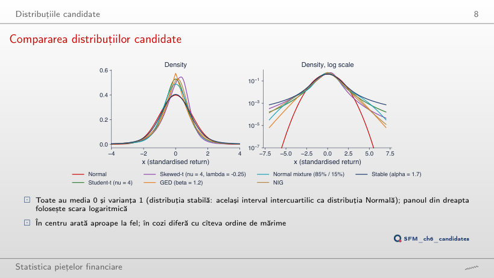
P(X < −x) pentru fiecare candidat (media 0, varianța 1)
Răspuns
De circa 536 000 de ori: 5,3 × 10−4 față de 9,9 × 10−10. La x = 2 cele două probabilități sînt aproape egale (raportul 1,0), la x = 3 raportul este 4,9, la x = 5 este 3 682. Coada Normală scade ca e−x²/2, coada Student-t ca o putere a lui x, deci raportul crește tot mai repede cu pragul. Media și varianța sînt aceleași; diferența stă numai în coadă, acolo unde se află VaR 1%.
Statisticile SFESumm: reperele oricărui model
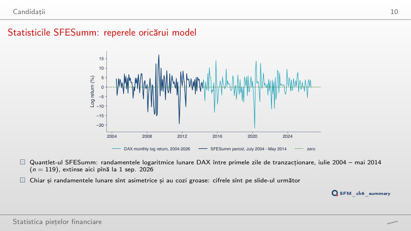
Statistici descriptive, randamente logaritmice lunare DAX (%)
Răspuns
Nu. Între 2014 și 2019 scade, pînă la 4,30 în mai 2016, pentru că lunile adăugate sînt liniștite. Urcă brusc la 4,93 cînd intră randamentul dintre începutul lui martie și începutul lui aprilie 2020, −21,70%, noul minim al eșantionului (cel vechi era −19,35%). Boltirea depinde de cîteva luni extreme, nu de numărul de luni. Pe 2004–2026 asimetria rămîne negativă (−0,72), iar testul Jarque–Bera respinge normalitatea cu JB = 70,2.
Statistici descriptive: DAX lunar și randamente zilnice
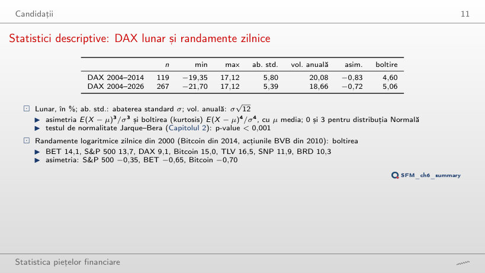
Randamente logaritmice zilnice (%)
Exemplu lucrat: testul Jarque–Bera
Răspuns
20,5. Boltirea folosește puterea a patra a abaterilor de la medie, deci două zile extreme o mută mult, chiar dacă suma lor, +5,5%, este mică. Asimetria trece de la −0,87 la −0,58. În curs, ν̂ al distribuției Student-t scade de la 3,44 la 3,33, iar clasamentul AIC nu se schimbă (cîștigă Student-t în ambele cazuri). JB al TLV crește și el, pentru că (K − 3)² crește.
Recapitulare: metoda verosimilității maxime
Estimarea ML numerică pentru ceilalți candidați (S&P 500)
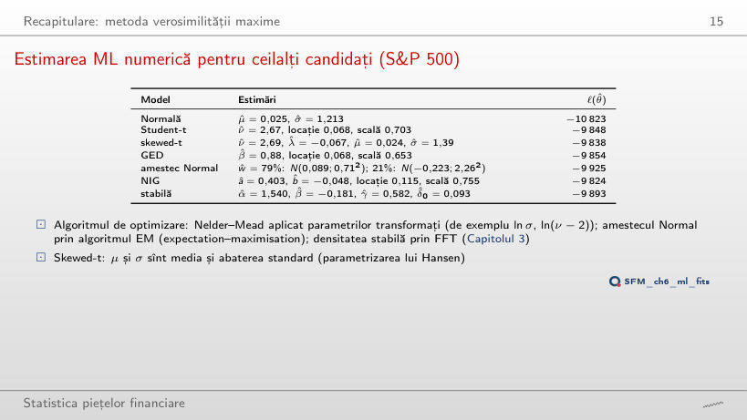
Estimări ML și log-verosimilitatea maximizată
Exemplu lucrat: modelul Normal, pas cu pas
Răspuns
Mai mic: 2,23, cel mai mic dintre cele șapte serii, deci coada cea mai groasă. BET are 2,43, DAX 3,09, BRD 4,67. Un ν̂ apropiat de 2 înseamnă o varianță abia finită. Abaterea standard mare a Bitcoin (3,5% pe zi) intră în scală, nu în ν: scala Student-t a Bitcoin este 1,85, iar abaterea standard implicată, scală·√(ν/(ν − 2)), este 5,75%, peste abaterea standard de selecție (3,49%), pentru că ν̂ este aproape de 2.
Precizia lui ν: log-verosimilitatea profil
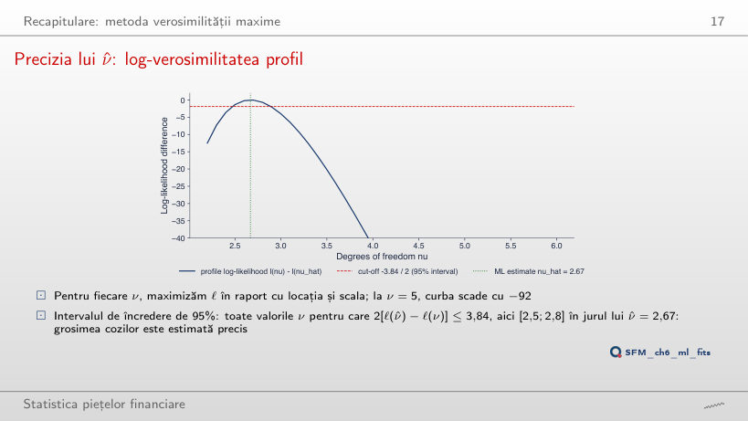
Exemplu lucrat: este ν testat în interval?
Răspuns
De la 2,5 la 2,8. Capetele adevărate, 2,47 și 2,89, se află între punctele grilei (2,4–2,5 și 2,8–2,9); o grilă de 0,1 citită direct ar da [2,5; 2,8], un interval prea îngust. Intervalul nu este simetric în jurul lui ν̂ = 2,67: 0,20 la stînga, 0,22 la dreapta, pentru că profilul nu este o parabolă. La ν = 5, log-verosimilitatea profil este cu 92,3 sub maxim.
Modele imbricate: testul raportului de verosimilitate
Exemplu lucrat: este necesar parametrul de asimetrie?
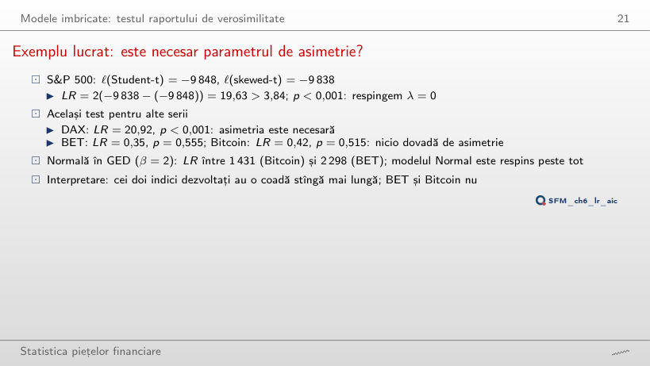
Exemplu lucrat: testul raportului de verosimilitate
Același test pe cele șapte serii
p-value ca funcție de LR
Răspuns
Nu: 3,01 < 3,84, p = 0,083. Valoarea fixată λ = 0 este în interiorul intervalului (−1, 1), deci teorema lui Wilks se aplică și valoarea critică este 3,84; 2,71 este valoarea pentru frontieră (Normală în Student-t). AIC preferă totuși skewed-t (ΔAIC al Student-t: 1,0), pentru că AIC nu este un test: penalizează un parametru cu 2, iar LR > 2. Asimetria este semnificativă doar pentru S&P 500 (LR = 19,63) și DAX (20,92).
Modele neimbricate: testul Vuong
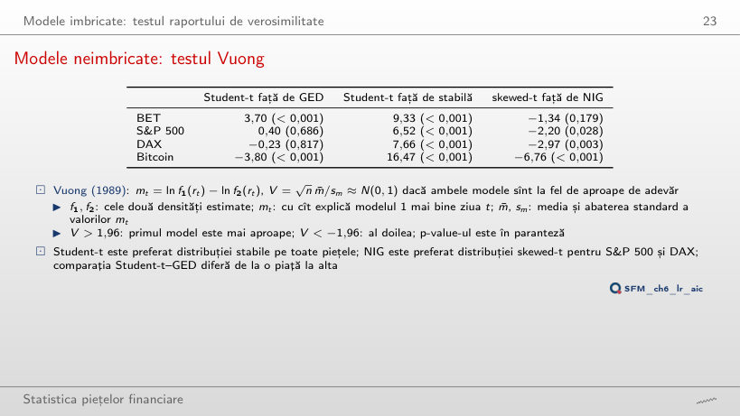
Exemplu lucrat: statistica Vuong
Statistica V și p-value pe cele șapte serii
Suma cumulată a diferențelor zilnice mt
Răspuns
Nu: |V| = 1,89 < 1,96, p = 0,059. Student-t explică în medie mai bine zilele BRD, dar diferența nu este separată de zgomot. Ziua cu cea mai mare |mt| este 19 decembrie 2018 (mt = −2,48: distribuția stabilă explică mai bine această cădere). Pentru TLV și SNP, V = 3,77 și 4,16. Suma diferențelor zilnice este exact diferența log-verosimilităților, ℓ(Student-t) − ℓ(stabilă).
Criterii informaționale: AIC și BIC
Exemplu lucrat: șapte modele pentru S&P 500
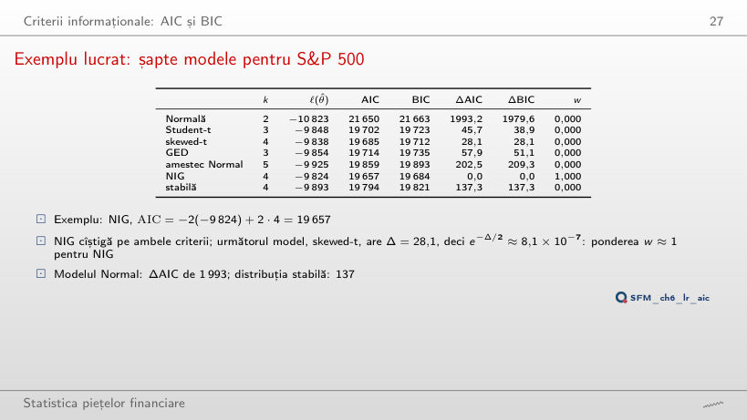
Exemplu lucrat: AIC, BIC și ponderea Akaike
Răspuns
0,62 pentru skewed-t și 0,38 pentru Student-t (celelalte cinci modele au ponderi practic nule): w = e−Δ/2/Σ e−Δj/2, cu e−0,5 = 0,61. O diferență de 1 lasă ambele modele plauzibile; AIC nu este un test. Cu ponderile BIC, ordinea se inversează: 0,93 pentru Student-t.
ΔAIC pentru șapte serii
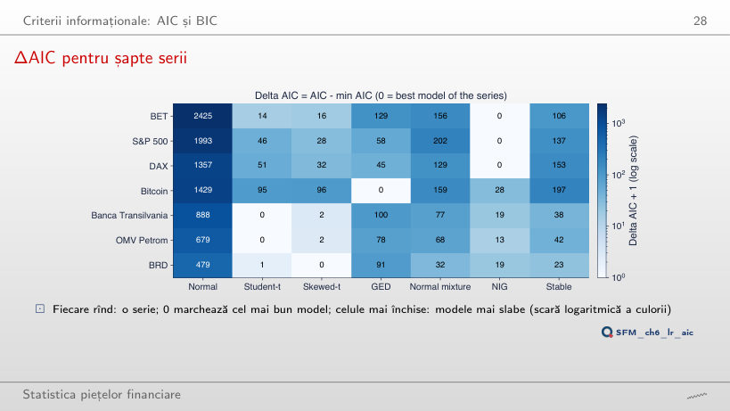
Cel mai bun model după fiecare criteriu
Răspuns
Student-t, cu ΔBIC = 5,2 pentru skewed-t. BIC penalizează parametrul suplimentar cu ln 3 771 = 8,24, mai mult decît cîștigul de ajustare (LR = 3,01). Pentru TLV și SNP, ambele criterii aleg Student-t; pentru BET, S&P 500 și DAX, NIG; pentru Bitcoin, GED. Modelul Normal are ΔBIC între 472 și 2 412.
Teste de concordanță
Exemplu lucrat: KS pe cinci randamente
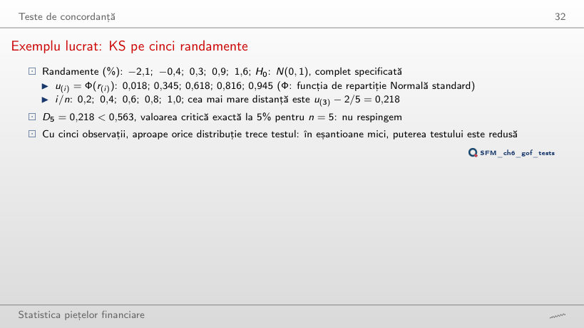
Exemplu lucrat: statistica KS
Răspuns
Pentru niciunul: D5 este între 0,188 (σ = 1,4) și 0,364 (σ = 0,5), mereu sub 0,563. Cu cinci observații, testul nu separă o abatere standard de 0,5% de una de 2%: puterea lui este foarte mică. Cu μ și σ estimate din cele cinci randamente (Lilliefors), D5 = 0,175, iar valoarea critică scade la 0,351 (simularea din curs, ca pe slide).
Slăbiciunea testului KS în cozi
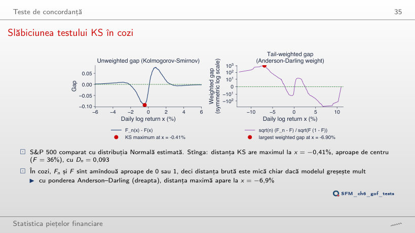
Exemplu lucrat: distanța KS în punctul de maxim
Răspuns
Tot în corpul distribuției: la x = −1,69% (F = 30%), cu Dn = 0,099. Pentru toate cele șapte serii, maximul KS este între x = −1,7% și +1,0%, unde funcțiile de repartiție au pante mari. Distanța ponderată Anderson–Darling are maximul în coadă: −6,9% pentru S&P 500, −20,1% pentru Bitcoin. KS măsoară forma corpului, AD forma cozilor.
Puterea celor trei teste
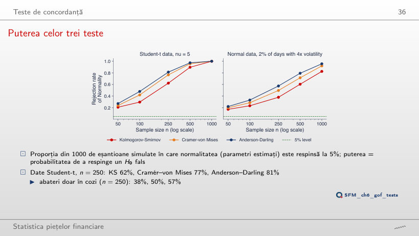
Puterea la 5%: date Student-t (ν = 5) și date Normale cu 2% din zile de 4 ori mai volatile
Valori critice KS la 5%: parametri estimați (simulare, 4 000 de eșantioane) și F cunoscută
Răspuns
82,5%, sub cea a testului AD (95,6%) și CvM (92,0%). Cu date Student-t (ν = 5), la n = 1 000 toate trei resping aproape mereu (99,9%–100%). Testul AD pune o pondere mai mare pe cozi, acolo unde se află abaterea. La n = 100, KS respinge datele Student-t doar în 30% din eșantioane: un test KS pe 100 de randamente care nu respinge distribuția Normală nu spune mare lucru despre VaR 1%.
Teste EDF pe S&P 500
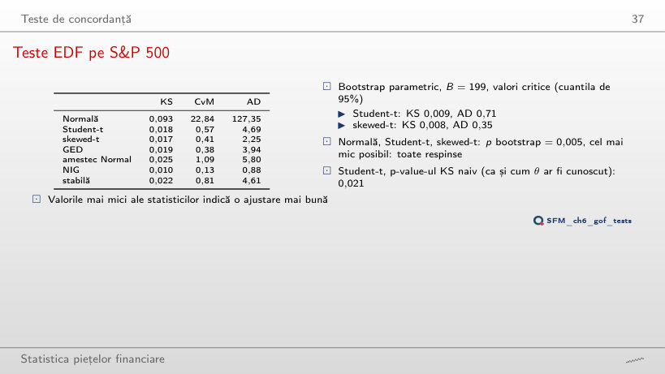
Statisticile EDF ale modelelor estimate; clasamentul după AD și după AIC
Răspuns
Nu exact. După AD: NIG (0,88), skewed-t (2,25), GED (3,94), stabilă (4,61), Student-t (4,69), amestec Normal (5,80), Normală (127,35). După AIC: NIG, skewed-t, Student-t, GED, stabilă, amestec Normal, Normală. Primele două și ultimele două locuri coincid; Student-t coboară de pe locul 3 pe locul 5. AD și AIC măsoară lucruri diferite: AD distanța ponderată dintre funcțiile de repartiție, AIC densitatea în punctele observate.
Grafice PP și QQ
Grafice PP: S&P 500
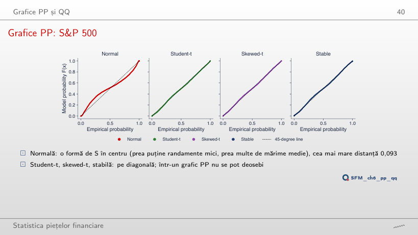
Răspuns
0,018, practic statistica KS (0,018). Skewed-t are 0,017, distribuția stabilă 0,022: în graficul PP cele trei nu se pot deosebi, deși cozile lor diferă cu ordine de mărime. Graficul PP comprimă cozile în colțuri; graficul QQ de pe slide-ul următor le dilată.
Grafice QQ: S&P 500
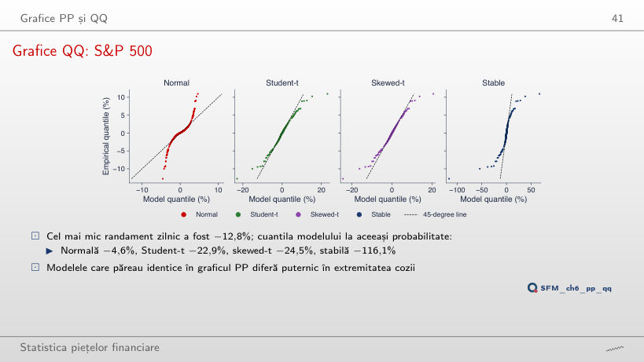
Cuantila fiecărui model la probabilitatea celui mai mic randament, 0,5/n (%)
Răspuns
−385,6%, de peste 8 ori mai mult decît s-a observat. Student-t dă −85,0%, NIG −31,3%, GED −24,2%, modelul Normal −12,7%. La probabilitatea 0,5/n = 1,1 × 10−4, modelele diferă cel mai mult, iar datele conțin un singur punct: acolo incertitudinea este cea mai mare.
Grafice QQ pentru BET, Bitcoin și Banca Transilvania
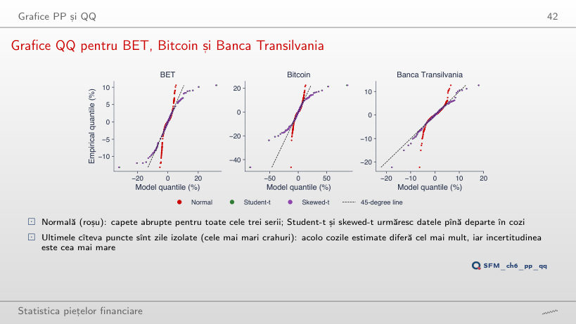
Răspuns
−51,9%, de peste două ori randamentul observat; la al zecelea (−15,5%), −22,5%. Coada Student-t estimată pe Bitcoin (ν̂ = 2,23) este mai lungă decît cea a datelor. Pentru TLV situația este inversă: cea mai mare scădere, −22,2%, are cuantila Student-t −17,8%. Modelul Normal rămîne mult sub date pentru toate cele trei serii (Bitcoin: −12,7%).
Compararea modelelor după VaR 1%
VaR 1% și ES 2,5% pentru fiecare model (în eșantion)
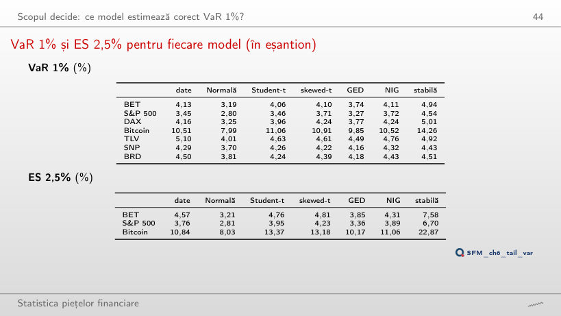
Exemplu lucrat: VaR și ES ale modelului Normal
Răspuns
Modelul Normal 3,72%, datele 7,22%: la 0,1% modelul Normal acoperă doar jumătate din pierdere. Student-t dă 8,58%, NIG 6,98%, distribuția stabilă 19,70%. La VaR 5%, ordinea se inversează: modelul Normal dă 1,97%, peste datele (1,85%). ES 2,5% al modelului Normal din formula φ(z)/α (2,81%) coincide cu valoarea obținută prin integrarea cuantilei.
VaR 1% al modelelor raportat la date
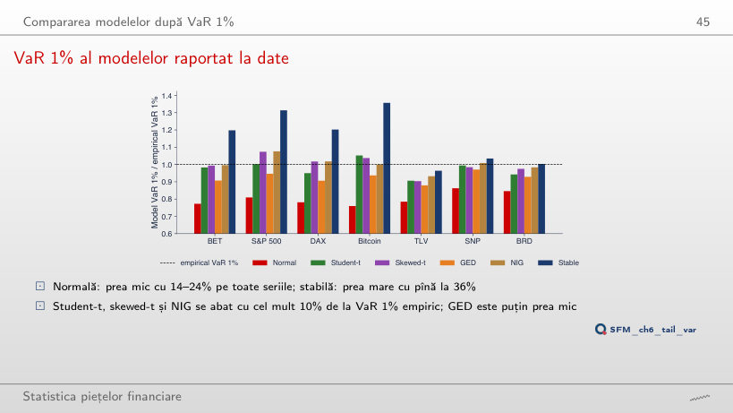
Răspuns
Peste 1 pe toate seriile, între 1,03 (DAX) și 1,16 (BET): la 5% modelul Normal supraestimează pierderea. Aceeași abatere standard σ̂ este prea mare pentru corpul distribuției și prea mică pentru coada ei; cele două erori se compensează pe undeva între 2,5% și 5%. La 0,1% raportul scade la 0,45–0,65.
Coada stîngă pe axe log-log (S&P 500)
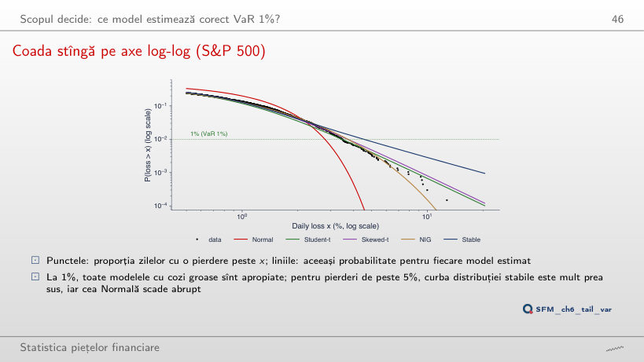
Răspuns
Circa 19. Modelul Normal așteaptă practic zero (probabilitatea 7 × 10−17), Student-t 4,5, NIG 1,0, GED 0,08. Pentru pierderi de peste 5%, datele au 23 de zile, stabila așteaptă 57, Student-t 27, NIG 26. Coada stabilă (α̂ = 1,54) este mult prea groasă pentru S&P 500.
Numărarea depășirilor: testul Kupiec
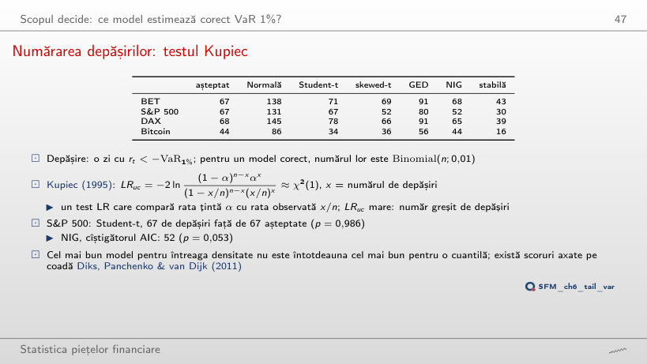
Depășiri în eșantion (p-value Kupiec în paranteză)
Exemplu lucrat: testul Kupiec
Răspuns
Nu: 151 de depășiri față de 167,9 așteptate, p = 0,18. Student-t, perfect la 1% (67 față de 67), este respins la 2,5%: 211 depășiri, p = 0,001. Un model bun pentru o cuantilă nu este neapărat bun pentru alta. La VaR 0,1%, NIG are 7 depășiri față de 6,7 așteptate, iar modelul Normal 52.
În afara eșantionului: validare și supraajustare
Rezultate în afara eșantionului, 2020–2026
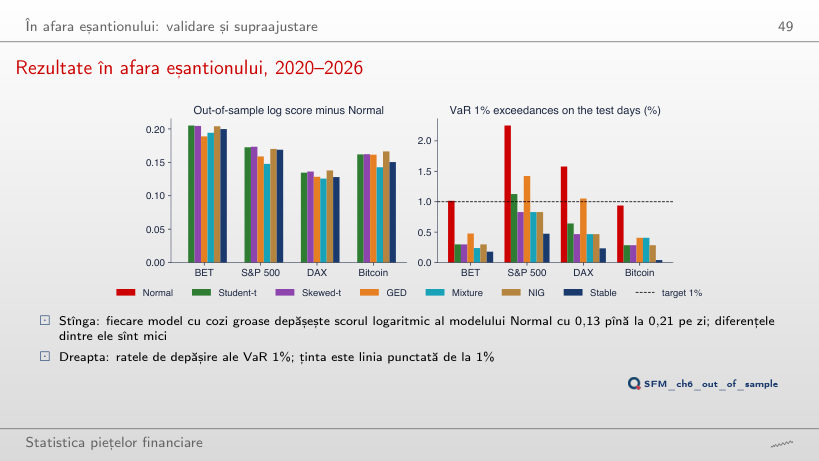
Depășiri ale VaR 1% în zilele de test, 2020–2026 (p-value Kupiec în paranteză)
Exemplu lucrat: pierderea pinball a cuantilei de 1%
Răspuns
Modelul Normal (0,0475), urmat de GED (0,0494); Student-t, cel mai bun după scorul logaritmic, are 0,0517, iar NIG, cîștigătorul AIC pe 2000–2019, 0,0513. Perioada de test a fost mai calmă pentru BET, iar VaR Normal, mai mic, a avut 17 depășiri față de 16,7 așteptate. Numărul potrivit vine dintr-un motiv greșit: un model static nu urmărește volatilitatea.
Supraajustare: amestecuri Normale cu 1 pînă la 6 componente
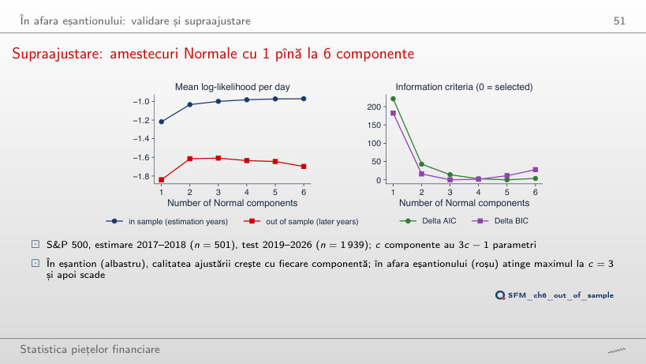
Exemplu lucrat: AIC și BIC
Răspuns
De la 5,71 (pe pașii de 0,1 ai cursorului, de la 5,8): trecerea de la 3 la 4 componente aduce 2(ℓ4 − ℓ3) = 17,14 pentru 3 parametri în plus, adică 5,71 pe parametru. Sub 0,8 se alege c = 6, între 0,8 și 3 c = 5, între 3 și 5,71 c = 4. În afara eșantionului cel mai bun este c = 3 (−1,608 pe zi), iar c = 6 dă −1,698.
VaR 1% pe fereastră mobilă: reestimare lunară
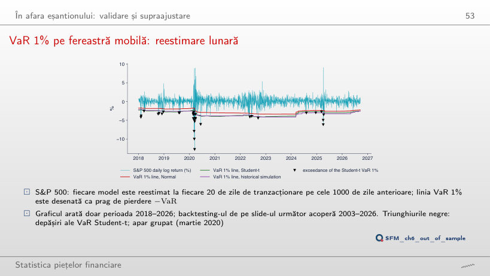
Depășiri pe an
Backtesting pe toată perioada de test
Exemplu lucrat: testul de independență Christoffersen (rulare suplimentară)
Răspuns
Nu: LRind = 19,81, p < 0,001. După o zi cu depășire urmează o altă depășire în 10,1% din cazuri (9 din 89), față de 1,4% după o zi fără depășire. Depășirile se adună în august 2007, septembrie–noiembrie 2008 (6, 9 și 6) și martie 2020 (9). Pentru BET, simularea istorică trece testul Kupiec (p = 0,066), dar nu și testul de independență (p = 0,014).
Graficul de fiabilitate VaR (SFEVaRqqplot)
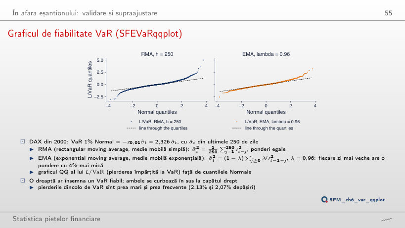
Răspuns
Nu: rata rămîne între 1,96% (λ = 0,97) și 2,40% (λ = 0,99). Volatilitatea EMA se adaptează, dar cuantila Normală z0,01 = −2,326 rămîne prea mică pentru randamentele standardizate, care au cozi mai groase decît distribuția Normală: capătul drept al graficului QQ se curbează în sus pentru orice λ. RMA cu h = 250 are 2,13%; cu h = 125, 2,21%.
Incertitudinea de model
Incertitudinea clasamentului modelelor
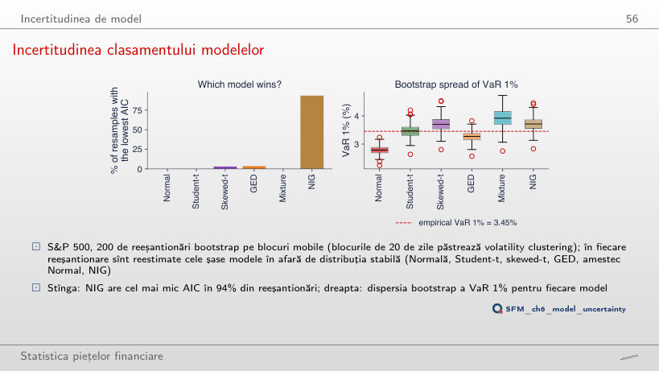
Reeșantionările bootstrap pe blocuri mobile, S&P 500
Răspuns
100%: NIG cîștigă în toate primele 20. Cu B = 40, 95%; cu B = 100, 95%; cu B = 200, 93,5% (GED 3,5%, skewed-t 3%). Un număr mic de reeșantionări supraestimează siguranța cîștigătorului. Intervalele de 90% ale VaR 1% (Student-t [3,14; 3,87]%, NIG [3,34; 4,18]%) se suprapun: incertitudinea dintre modele este comparabilă cu cea din interiorul unui model.
Medierea modelelor și riscul de model
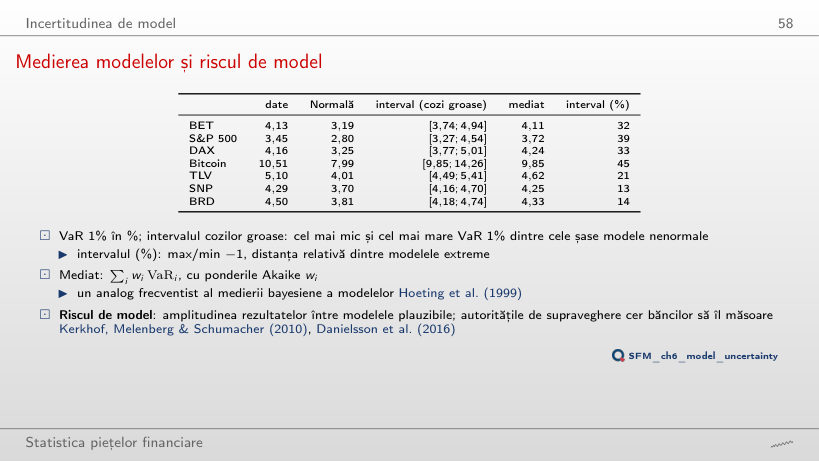
VaR (%) al datelor, al modelelor și mediat
Exemplu lucrat: VaR mediat
Răspuns
Amestecul Normal (coloana „amestec” din tabelul VaR al cursului), unul dintre cele șase modele nenormale. Fără el, intervalul TLV devine [4,49; 4,92], adică 10% în loc de 21%. La fel pentru SNP (4,70%) și BRD (4,74%). Pentru indici și Bitcoin, capătul de sus vine de la distribuția stabilă.
Randamente logaritmice zilnice, în %: BET, S&P 500 și DAX din ianuarie 2000, Bitcoin din septembrie 2014 (7 zile pe săptămînă), Banca Transilvania (TLV), OMV Petrom (SNP) și BRD din 2010, din prețul ajustat, pînă la 18 septembrie 2026; cele două zile greșite ale TLV din mai 2016 sînt eliminate. DAX lunar: prima zi de tranzacționare a fiecărei luni (SFESumm). Prețuri de închidere EODHD. Parametrii estimați, log-verosimilitățile, cuantilele modelelor, VaR pe fereastră mobilă și reeșantionările bootstrap sînt cele din curs (același cod, aceeași sămînță a generatorului); statisticile descriptive, VaR și ES empirice, depășirile, testele Kupiec, scorurile pinball și graficul SFEVaRqqplot sînt recalculate în browser din aceleași randamente. Nivelurile VaR diferite de 1%, celelalte serii ale profilului lui ν, testul Christoffersen și ponderile BIC sînt rulări suplimentare ale aceluiași cod.